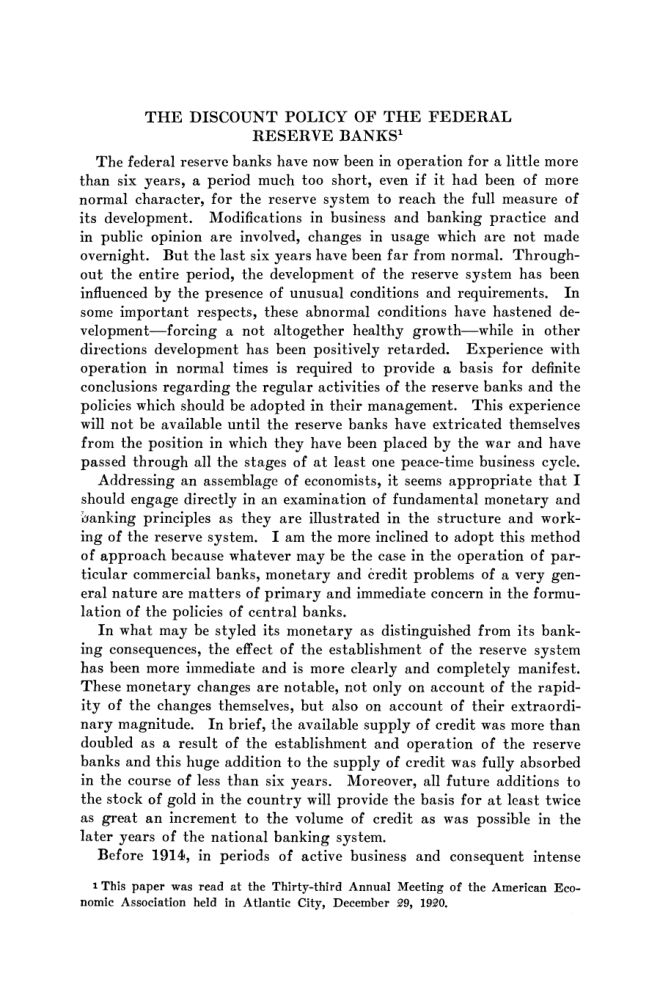

Sprague, 1920: o que deve guiar a taxa de desconto do Federal Reserve
Leitura: 8 min
Depois de seis anos de Federal Reserve, Sprague mostra como o sistema dobrou a oferta de crédito e propõe que a taxa de desconto se guie pelos efeitos do crédito sobre os preços, e não pela razão de reservas.


Em 5 de novembro de 1920, os bancos do Federal Reserve tinham US$ 3.126 milhões emprestados aos bancos membros. No armistício, dois anos antes, emprestavam perto de US$ 1,8 bilhão, além de quase US$ 400 milhões em títulos comprados no mercado. A guerra acabara, mas a dependência dos bancos em relação ao banco central não diminuíra; crescera quase 50%.
É desse quadro que parte O. M. W. Sprague, de Harvard, no texto lido em 29 de dezembro de 1920, em Atlantic City, na reunião anual da American Economic Association. O sistema tinha pouco mais de seis anos, período curto e nada normal. Sprague escolhe examinar os princípios monetários que a experiência ilustra, porque, diz, num banco central os problemas gerais de moeda e crédito são questões imediatas de política.
Quanto crédito o novo sistema criou?
A primeira constatação é a magnitude. A oferta disponível de crédito mais que dobrou com a criação dos bancos de reserva, e esse acréscimo foi absorvido em menos de seis anos. Antes de 1914, mesmo em períodos de demanda intensa, o dinheiro nos cofres dos bancos nacionais nunca ficava abaixo de um oitavo dos depósitos líquidos. Com a lei de junho de 1917, as reservas em espécie deixaram de ser exigidas: a única reserva legal passou a ser um saldo no banco de reserva, de 7%, 10% e 13% dos depósitos líquidos para os bancos do interior, das cidades de reserva e das cidades centrais de reserva, mais 3% sobre depósitos a prazo.
O segundo mecanismo é a nota do Federal Reserve, emitida como instrumento de crédito e não, como a nota do Banco da Inglaterra, quase como um certificado de ouro. Ela permitiu substituir por notas o ouro que circulava nos bolsos ou servia de troco nos bancos, entre meio e três quartos de bilhão de dólares, e sobretudo reter o ouro. Toda expansão de depósitos é seguida de uma demanda por dinheiro que passa de mão em mão; sem novas notas, essa demanda absorveria ouro. Entre junho de 1914 e junho de 1919, o dinheiro fora do Tesouro e dos bancos subiu de US$ 1.600 milhões para US$ 3.500 milhões, enquanto os depósitos à vista de pessoas e empresas iam de US$ 10.700 milhões a US$ 23.400 milhões: um dólar a mais de moeda para cada seis de depósitos.
De quem é a responsabilidade pela inflação?
A maior parte da expansão, diz Sprague, não se deve à direção do sistema. O ouro importado antes da entrada na guerra estava fora de seu alcance, e a política de finanças de guerra que gerou os empréstimos não era responsabilidade do Federal Reserve Board. Ele se diz convencido de que seria possível financiar sem inflação até despesas como as da guerra, mas igualmente certo de que os Estados Unidos não poderiam fazê-lo: o caminho fácil da inflação tinha apoio da opinião pública, e faltavam a máquina administrativa e talvez o poder constitucional para uma tributação adequada.
Seja qual for a política financeira do governo na guerra, o dever do banco central é cooperar lealmente na sua execução. Depois do armistício, o Tesouro manteve por insistência a política de tomar emprestado a juros anormalmente baixos; Sprague diz que já julgava na época, e continua a julgar, que juros mais altos nos certificados do governo no verão e no outono de 1919 teriam sido mais sábios. Mas não acha que o Board pudesse ter recusado cooperação.
O que 1920 ensinou sobre a taxa de desconto?
O controle do Tesouro sobre a política de desconto foi relaxado com relutância e parece ter cessado com a última emissão de certificados a 4 3/4%, em janeiro de 1920. O sistema recuperou então a responsabilidade num momento difícil: depois de quase cinco anos de atividade, crédito e preços em alta, o crédito já não estimulava a produção, mas desorganizava a indústria, com especulação e disputas salariais, e a qualidade média dos empréstimos piorava. As altas sucessivas das taxas no primeiro semestre não foram inteiramente voluntárias; foram impostas pela posição de reservas, que em poucos meses deixaria o sistema sem margem para emergências.
O freio foi acionado antes de esgotado o crédito e antes de uma crise, e nisso Sprague vê a vantagem do sistema sobre o anterior, em que a transição sempre vinha com pânico. A taxa de desconto se mostrou eficaz, mas lenta: o crédito continuou a crescer por meses depois da alta de maio, porque havia crédito ocioso espalhado por milhares de bancos. Daí a sugestão de subir as taxas em degraus de um ponto percentual, como o Banco da Inglaterra, já que frações de ponto se mostraram ineficazes.
A liquidação lenta tem seus próprios custos. A perda total é menor, mas sua distribuição entre os grupos de produtores não é necessariamente mais justa, e os preços caem de forma irregular. E adverte contra o remédio da inflação por empréstimos forçados dos bancos de reserva, equivalente à emissão de papel-moeda que se pediu e se evitou depois da Guerra Civil.
“o remédio de charlatão da inflação” (“the quack remedy of inflation”)
Por que a razão de reservas é um mau guia?
A pergunta final é se o sistema pode evitar que se formem as condições que tornam a liquidação inevitável. Sprague teme o contrário. Depois da liquidação, a razão de reservas pode chegar a 70%, com taxas moderadas e muito crédito disponível. Com a razão de reservas como guia, prevê, o sistema evitará pânicos, mas trará oscilações de preços muito maiores que as do sistema bancário nacional. A prática do Banco da Inglaterra antes da guerra, de subir e baixar a taxa conforme a reserva, funcionava porque a expansão do crédito lá logo drenava ouro, para a circulação interna ou para o exterior. Nos Estados Unidos, o crédito não drena ouro para a circulação, e, com a maior parte do mundo fora do padrão-ouro, as exportações de ouro não serão por muitos anos consequência automática da expansão.
A proposta é guiar a política de desconto pelos efeitos observados do crédito, sobretudo por altas decididas de preços que se estendam por vários anos, segundo o juízo especializado do Federal Reserve Board, sujeito à crítica pública. Não se trata de estabilizar os preços, esclarece, nem de compensar mudanças permanentes na oferta mundial de ouro; o objetivo é moderar as oscilações dentro de cada ciclo, contendo a alta para reduzir a queda seguinte.
Se o Board não adotar esse critério, ou o abandonar por falta de apoio, Sprague propõe uma alternativa que julga pior: num momento favorável, elevar a reserva legal contra as notas, ou contra notas e depósitos, a 50% ou mesmo 60%. Mesmo assim haveria mais crédito do que no sistema anterior, e quanto pudesse ser usado com proveito.
“O crédito não é capital; é apenas um meio de transferir capital.” (“credit is not capital; it is simply an agency for transferring capital.”)
Sua conclusão é que a experiência de seis anos não revelou defeitos sérios na estrutura do sistema, e que o enorme poder de expansão não representa perigo se forem adotadas políticas adequadas. Mas essas políticas exigem confiança do público na direção dos bancos de reserva e disposição para apoiá-la mesmo quando as consequências imediatas são dolorosas.
Na minha leitura
Na minha leitura, o texto de Sprague é uma das primeiras formulações claras do problema que todo banco central enfrenta quando deixa de ter uma âncora automática. Enquanto o ouro saía do país a cada expansão, a razão de reservas fazia o trabalho de alerta; sem essa disciplina, a regra simples continua visível, mas deixa de medir o que importa. A troca que ele propõe, de uma regra mecânica por um juízo sobre os efeitos do crédito, é a mesma que mais tarde se fará entre regras e discricionariedade.
O que me parece mais atual é a atenção ao tempo e à legitimidade. Sprague percebe que a política age com defasagem, que agir cedo custa menos do que agir tarde e que o apoio público é mais fácil quando a regra é óbvia. Leffingwell, na discussão, responderia que ninguém deve ter o poder de decidir se haverá tempos bons ou maus; o debate entre os dois é, no fundo, sobre quanto juízo se pode delegar a uma autoridade monetária.
Glossário
- Taxa de desconto (ou redesconto)
- juro cobrado pelo banco central ao emprestar aos bancos contra títulos que estes descontaram.
- Razão de reservas
- proporção entre o ouro e a moeda legal do banco central e suas obrigações em notas e depósitos.
- Banco membro
- banco comercial filiado ao sistema do Federal Reserve, obrigado a manter depósito de reserva.
- Nota do Federal Reserve
- papel-moeda emitido pelos bancos de reserva com lastro parcial em ouro.
- Liquidação
- redução dos empréstimos e dos estoques que se segue a um período de expansão do crédito.
- Comptroller of the Currency
- órgão do Tesouro americano que supervisionava os bancos nacionais.
Fontes
- The Discount Policy of the Federal Reserve Banks — O. M. W. Sprague (Harvard University) (pp. 16–29). JSTOR · Internet Archive (PDF)
- Edição completa, com os demais artigos: Nº 168 do Arquivo.
Documento em domínio público (EUA, publicado antes de 1931), via JSTOR Early Journal Content e Internet Archive. Resumo e comentário do autor deste site, sem afiliação com a American Economic Association. Encontrou um erro? Escreva: a correção é publicada no próprio texto, com data.
← Davenport, 1920: a dívida de guerra e o futuro da democracia ↑ Nº 168 · A taxa de desconto, a dívida de guerra e o produto medido em toneladas